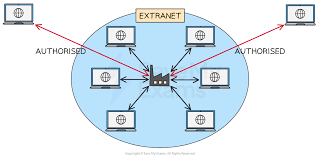

What is an Extranet?

Extranet illustration
Definition:
An extranet is a private network that uses Internet Protocol (IP) technologies to securely share part of a business's information or operations with external parties, such as customers, suppliers, or partners.
The network is basically accessed by both the private organization and some of its external trusted persons e.g. suppliers and patners.
Key Features:
- Secure access for external users
- Uses internet technologies like TCP/IP
- Controlled access with login credentials
- Supports collaboration with partners
Advantages:
- Improves communication with partners
- Reduces operational costs
- Enhances business collaboration
Disadvantages:
- Security risks if not properly managed
- Setup and maintenance costs